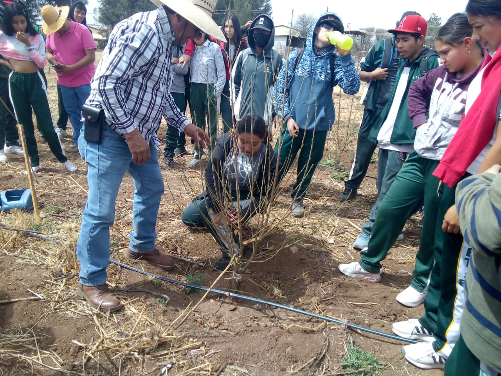

Esta especialidad se enfoca en el bienestar social, promoviendo el crecimiento sostenible de las comunidades y mejorando su calidad de vida.
Los egresados pueden desempeñarse en organizaciones sociales, gobiernos locales y proyectos de desarrollo sustentable, fomentando la inclusión y la equidad.
 ⬅ Volver